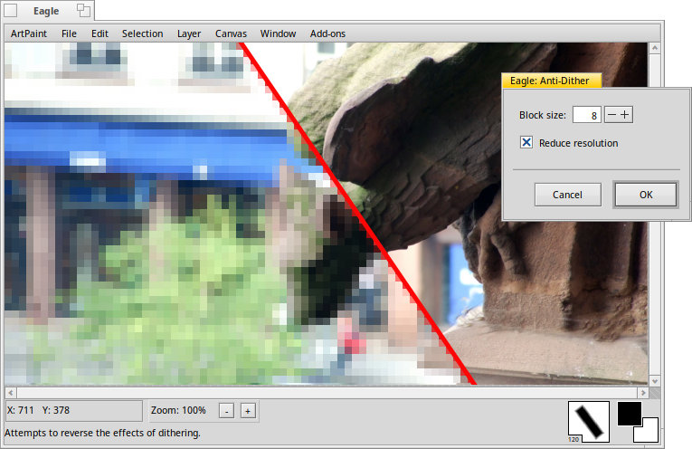

The Anti-Dither add-on

This add-on tries to reverse the effects of dithering, which is used to create for example smoother color gradients with a limited palette (see the Color Reducer).
This is done by blending a few neighboring pixels together. How many pixels is controlled with the . The larger the block size, the blurrier the picture gets.
Instead of blending, you can also instead. That won't blur, but the picture gets 'pixely'.
applies the effect.
Back: The Adaptive Histogram Equalization add-on Next: The Blur add-on